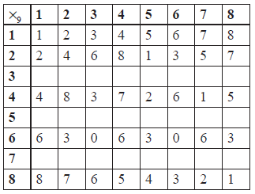

SL Paper 2
The set of all integer s from 0 to 99 inclusive is denoted by S. The binary operations \( * \) and \( \circ \) are defined on S by
\(a * b = \left[ {a + b + 20} \right]\)(mod 100)
\(a \circ b = \left[ {a + b - 20} \right]\)(mod 100).
The equivalence relation R is defined by \(aRb \Leftrightarrow \left( {{\text{sin}}\frac{{\pi a}}{5} = {\text{sin}}\frac{{\pi b}}{5}} \right)\).
Find the identity element of S with respect to \( * \).
Show that every element of S has an inverse with respect to \( * \).
State which elements of S are self-inverse with respect to \( * \).
Prove that the operation \( \circ \) is not distributive over \( * \).
Determine the equivalence classes into which R partitions S, giving the first four elements of each class.
Find two elements in the same equivalence class which are inverses of each other with respect to \( * \).
Consider the set \(J = \left\{ {a + b\sqrt 2 :a,{\text{ }}b \in \mathbb{Z}} \right\}\) under the binary operation multiplication.
Consider \(a + b\sqrt 2 \in G\), where \(\gcd (a,{\text{ }}b) = 1\),
Show that \(J\) is closed.
State the identity in \(J\).
Show that
(i) \(1 - \sqrt 2 \) has an inverse in \(J\);
(ii) \(2 + 4\sqrt 2 \) has no inverse in \(J\).
Show that the subset, \(G\), of elements of \(J\) which have inverses, forms a group of infinite order.
(i) Find the inverse of \(a + b\sqrt 2 \).
(ii) Hence show that \({a^2} - 2{b^2}\) divides exactly into \(a\) and \(b\).
(iii) Deduce that \({a^2} - 2{b^2} = \pm 1\).
(i) Draw the Cayley table for the set \(S = \left\{ {0,1,2,3,4,\left. 5 \right\}} \right.\) under addition modulo six \(({ + _6})\) and hence show that \(\left\{ {S, + \left. {_6} \right\}} \right.\) is a group.
(ii) Show that the group is cyclic and write down its generators.
(iii) Find the subgroup of \(\left\{ {S, + \left. {_6} \right\}} \right.\) that contains exactly three elements.
Prove that a cyclic group with exactly one generator cannot have more than two elements.
\(H\) is a group and the function \(\Phi :H \to H\) is defined by \(\Phi (a) = {a^{ - 1}}\) , where \({a^{ - 1}}\) is the inverse of a under the group operation. Show that \(\Phi \) is an isomorphism if and only if H is Abelian.
The function \(f:\mathbb{R} \times \mathbb{R} \to \mathbb{R} \times \mathbb{R}\) is defined by \(\boldsymbol{X} \mapsto \boldsymbol{AX}\) , where \(\boldsymbol{X} = \left[ \begin{array}{l}
x\\
y
\end{array} \right]\) and \(\boldsymbol{A} = \left[ \begin{array}{l}
a\\
c
\end{array} \right.\left. \begin{array}{l}
b\\
d
\end{array} \right]\) where \(a\) , \(b\) , \(c\) , \(d\) are all non-zero.
Consider the group \(\left\{ {S,{ + _m}} \right\}\) where \(S = \left\{ {0,1,2 \ldots m - 1} \right\}\) , \(m \in \mathbb{N}\) , \(m \ge 3\) and \({ + _m}\) denotes addition modulo \(m\) .
Show that \(f\) is a bijection if \(\boldsymbol{A}\) is non-singular.
Suppose now that \(\boldsymbol{A}\) is singular.
(i) Write down the relationship between \(a\) , \(b\) , \(c\) , \(d\) .
(ii) Deduce that the second row of \(\boldsymbol{A}\) is a multiple of the first row of \(\boldsymbol{A}\) .
(iii) Hence show that \(f\) is not a bijection.
Show that \(\left\{ {S,{ + _m}} \right\}\) is cyclic for all m .
Given that \(m\) is prime,
(i) explain why all elements except the identity are generators of \(\left\{ {S,{ + _m}} \right\}\) ;
(ii) find the inverse of \(x\) , where x is any element of \(\left\{ {S,{ + _m}} \right\}\) apart from the identity;
(iii) determine the number of sets of two distinct elements where each element is the inverse of the other.
Suppose now that \(m = ab\) where \(a\) , \(b\) are unequal prime numbers. Show that \(\left\{ {S,{ + _m}} \right\}\) has two proper subgroups and identify them.
The binary operator \( * \) is defined for a , \(b \in \mathbb{R}\) by \(a * b = a + b - ab\) .
(i) Show that \( * \) is associative.
(ii) Find the identity element.
(iii) Find the inverse of \(a \in \mathbb{R}\) , showing that the inverse exists for all values of \(a\) except one value which should be identified.
(iv) Solve the equation \(x * x = 1\) .
The domain of \( * \) is now reduced to \(S = \left\{ {0,2,3,4,5,\left. 6 \right\}} \right.\) and the arithmetic is carried out modulo \(7\).
(i) Copy and complete the following Cayley table for \(\left\{ {S,\left. * \right\}} \right.\) .

(ii) Show that \(\left\{ {S,\left. * \right\}} \right.\) is a group.
(iii) Determine the order of each element in S and state, with a reason, whether or not \(\left\{ {S,\left. * \right\}} \right.\) is cyclic.
(iv) Determine all the proper subgroups of \(\left\{ {S,\left. * \right\}} \right.\) and explain how your results illustrate Lagrange’s theorem.
(v) Solve the equation \(2 * x * x = 5\) .
The set \(S\) consists of real numbers r of the form \(r = a + b\sqrt 2 \) , where \(a,b \in \mathbb{Z}\) .
The relation \(R\) is defined on \(S\) by \({r_1}R{r_2}\) if and only if \({a_1} \equiv {a_2}\) (mod2) and \({b_1} \equiv {b_2}\) (mod3), where \({r_1} = {a_1} + {b_1}\sqrt 2 \) and \({r_2} = {a_2} + {b_2}\sqrt 2 \) .
Show that \(R\) is an equivalence relation.
Show, by giving a counter-example, that the statement \({r_1}R{r_2} \Rightarrow r_1^2Rr_2^2\) is false.
Determine
(i) the equivalence class \(E\) containing \(1 + \sqrt 2 \) ;
(ii) the equivalence class \(F\) containing \(1 - \sqrt 2 \) .
Show that
(i) \({(1 + \sqrt 2 )^3} \in F\) ;
(ii) \({(1 + \sqrt 2 )^6} \in E\) .
Determine whether the set \(E\) forms a group under
(i) the operation of addition;
(ii) the operation of multiplication.
The set \({S_n} = \{ 1,{\text{ }}2,{\text{ }}3,{\text{ }} \ldots ,{\text{ }}n - 2,{\text{ }}n - 1\} \), where \(n\) is a prime number greater than 2, and \({ \times _n}\) denotes multiplication modulo \(n\).
Show that there are no elements \(a,{\text{ }}b \in {S_n}\) such that \(a{ \times _n}b = 0\).
Show that, for \(a,{\text{ }}b,{\text{ }}c \in {S_n},{\text{ }}a{ \times _n}b = a{ \times _n}c \Rightarrow b = c\).
Show that \({G_n} = \{ {S_n},{\text{ }}{ \times _n}\} \) is a group. You may assume that \({ \times _n}\) is associative.
Show that the order of the element \((n - 1)\) is 2.
Show that the inverse of the element 2 is \(\frac{1}{2}(n + 1)\).
Explain why the inverse of the element 3 is \(\frac{1}{3}(n + 1)\) for some values of \(n\) but not for other values of \(n\).
Determine the inverse of the element 3 in \({G_{11}}\).
Determine the inverse of the element 3 in \({G_{31}}\).
The set of all permutations of the list of the integers \(1,{\text{ }}2,{\text{ }}3{\text{ }} \ldots {\text{ }}n\) is a group, \({S_n}\), under the operation of composition of permutations.
Each element of \({S_4}\) can be represented by a \(4 \times 4\) matrix. For example, the cycle \({\text{(1 2 3 4)}}\) is represented by the matrix
\(\left( {\begin{array}{*{20}{c}} 0&1&0&0 \\ 0&0&1&0 \\ 0&0&0&1 \\ 1&0&0&0 \end{array}} \right)\) acting on the column vector \(\left( {\begin{array}{*{20}{c}} 1 \\ 2 \\ 3 \\ 4 \end{array}} \right)\).
(i) Show that the order of \({S_n}\) is \(n!\);
(ii) List the 6 elements of \({S_3}\) in cycle form;
(iii) Show that \({S_3}\) is not Abelian;
(iv) Deduce that \({S_n}\) is not Abelian for \(n \geqslant 3\).
(i) Write down the matrices M\(_1\), M\(_2\) representing the permutations \((1{\text{ }}2),{\text{ }}(2{\text{ }}3)\), respectively;
(ii) Find M\(_1\)M\(_2\) and state the permutation represented by this matrix;
(iii) Find \(\det (\)M\(_1)\), \(\det (\)M\(_2)\) and deduce the value of \(\det (\)M\(_1\)M\(_2)\).
(i) Use mathematical induction to prove that
\((1{\text{ }}n)(1{\text{ }}n{\text{ }} - 1)(1{\text{ }}n - 2) \ldots (1{\text{ }}2) = (1{\text{ }}2{\text{ }}3 \ldots n){\text{ }}n \in {\mathbb{Z}^ + },{\text{ }}n > 1\).
(ii) Deduce that every permutation can be written as a product of cycles of length 2.
Let \(f\) be a homomorphism of a group \(G\) onto a group \(H\).
Show that if \(e\) is the identity in \(G\), then \(f(e)\) is the identity in \(H\).
Show that if \(x\) is an element of \(G\), then \(f({x^{ - 1}}) = {\left( {f(x)} \right)^{ - 1}}\).
Show that if \(G\) is Abelian, then \(H\) must also be Abelian.
Show that if \(S\) is a subgroup of \(G\), then \(f(S)\) is a subgroup of \(H\).
Consider the special case in which \(G = \{ 1,{\text{ }}3,{\text{ }}4,{\text{ }}9,{\text{ }}10,{\text{ }}12\} ,{\text{ }}H = \{ 1,{\text{ }}12\} \) and \( * \) denotes multiplication modulo 13.
The group \(\{ G,{\text{ }} * \} \) has a subgroup \(\{ H,{\text{ }} * \} \). The relation \(R\) is defined such that for \(x\), \(y \in G\), \(xRy\) if and only if \({x^{ - 1}} * y \in H\). Show that \(R\) is an equivalence relation.
Show that 3\(R\)10.
Determine the three equivalence classes.
\(S\) is defined as the set of all \(2 \times 2\) non-singular matrices. \(A\) and \(B\) are two elements of the set \(S\).
(i) Show that \({({A^T})^{ - 1}} = {({A^{ - 1}})^T}\).
(ii) Show that \({(AB)^T} = {B^T}{A^T}\).
A relation \(R\) is defined on \(S\) such that \(A\) is related to \(B\) if and only if there exists an element \(X\) of \(S\) such that \(XA{X^T} = B\). Show that \(R\) is an equivalence relation.
A group has exactly three elements, the identity element \(e\) , \(h\) and \(k\) . Given the operation is denoted by \( \otimes \) , show that
(i) Show that \({\mathbb{Z}_4}\) (the set of integers modulo 4) together with the operation \({ + _4}\) (addition modulo 4) form a group \(G\) . You may assume associativity.
(ii) Show that \(G\) is cyclic.
Using Cayley tables or otherwise, show that \(G\) and \(H = \left( {\left\{ {1,2,3,\left. 4 \right\},{ \times _5}} \right.} \right)\) are isomorphic where \({{ \times _5}}\) is multiplication modulo 5. State clearly all the possible bijections.
the group is cyclic.
the group is cyclic.
The relation \({R_1}\) is defined for \(a,b \in {\mathbb{Z}^ + }\) by \(a{R_1}b\) if and only if \(n\left| {({a^2} - {b^2})} \right.\) where \(n\) is a fixed positive integer.
(i) Show that \({R_1}\) is an equivalence relation.
(ii) Determine the equivalence classes when \(n = 8\) .
Consider the group \(\left\{ {G, * } \right\}\) and let \(H\) be a subset of \(G\) defined by
\(H = \left\{ {x \in G} \right.\) such that \(x * a = a * x\) for all \(a \in \left. G \right\}\) .
Show that \(\left\{ {H, * } \right\}\) is a subgroup of \(\left\{ {G, * } \right\}\) .
The relation \({R_2}\) is defined for \(a,b \in {\mathbb{Z}^ + }\) by \(a{R_2}b\) if and only if \((4 + \left| {a - b} \right|)\) is the square of a positive integer. Show that \({R_2}\) is not transitive.
The relation \(R\) is defined on \({\mathbb{R}^ + } \times {\mathbb{R}^ + }\) such that \(({x_1},{y_1})R({x_2},{y_2})\) if and only if \(\frac{{{x_1}}}{{{x_2}}} = \frac{{{y_2}}}{{{y_1}}}\) .
Show that \(R\) is an equivalence relation.
Determine the equivalence class containing \(({x_1},{y_1})\) and interpret it geometrically.
The set \(S\) contains the eighth roots of unity given by \(\left\{ {{\text{cis}}\left( {\frac{{n\pi }}{4}} \right),{\text{ }}n \in \mathbb{N},{\text{ }}0 \leqslant n \leqslant 7} \right\}\).
(i) Show that \(\{ S,{\text{ }} \times \} \) is a group where \( \times \) denotes multiplication of complex numbers.
(ii) Giving a reason, state whether or not \(\{ S,{\text{ }} \times \} \) is cyclic.
The binary operation multiplication modulo \(9\), denoted by \({ \times _9}\) , is defined on the set \(S = \left\{ {1,2,3,4,5,6,7,8} \right\}\) .
Copy and complete the following Cayley table.

Show that \(\left\{ {S,{ \times _9}} \right\}\) is not a group.
Prove that a group \(\left\{ {G,{ \times _9}} \right\}\) can be formed by removing two elements from the set \(S\) .
(i) Find the order of all the elements of \(G\) .
(ii) Write down all the proper subgroups of \(\left\{ {G,{ \times _9}} \right\}\) .
(iii) Determine the coset containing the element \(5\) for each of the subgroups in part (ii).
Solve the equation \(4{ \times _9}x{ \times _9}x = 1\) .
The relation \(R\) is defined for \(x,y \in {\mathbb{Z}^ + }\) such that \(xRy\) if and only if \({3^x} \equiv {3^y}(\bmod 10)\) .
(i) Show that \(R\) is an equivalence relation.
(ii) Identify all the equivalence classes.
Let \(S\) denote the set \(\left\{ {x\left| {x = a + b\sqrt 3 ,a,b \in \mathbb{Q},{a^2} + {b^2} \ne 0} \right.} \right\}\) .
(i) Prove that \(S\) is a group under multiplication.
(ii) Give a reason why \(S\) would not be a group if the conditions on \({a,b}\) were changed to \({a,b \in \mathbb{R},{a^2} + {b^2} \ne 0}\) .